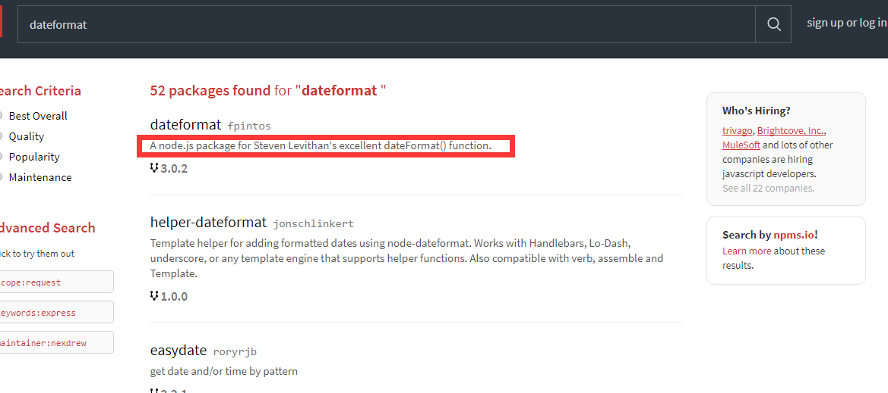

1. 介绍
先前已经介绍过JavaScript模块化开发，同时总结了AMD和CMD的区别。
但是先前的模块化开发它们之间的关联使用的是require.js或者sea.js,它们的入口文件都需要一个html页面。
nodejs服务器端开发是可以不需要html页面的，本节将介绍nodejs的模块化，通过学习完本节后，以前使用到NPM安装的一些插件你会知其然也知其所以然了。
本节内容：
- 回顾AMD模块化之require
- 回顾CMD模块化之sea
- 回顾CommonJS模块化之node
- node模块化之简单使用
- node模块化之node_modules
- node模块化之npm
- 使用第三方插件完成日期格式化
2. 回顾AMD模块化之require
AMD推崇依赖前置，就是提前加载依赖项
定义模块：
define(模块ID？，依赖列表数组?,回调函数(){
//使用return对外暴露变量或函数
return {
}
});
加载依赖：
require([依赖的模块列表],回调函数(){
//当依赖项全部加载完成后会执行回调函数。
});
3. 回顾CMD模块化之sea
CMD推崇就近依赖，就是何时用何时依赖
定义模块：
define(回调函数(require,exports,module){
//暴露接口使用exports或module.exports
//什么时候依赖，什么时候就使用reuqire加载
});
4. 回顾CommonJS模块化之node
一个js文件就是一个模块，
暴露变量或函数使用exports
暴露对象构造函数使用module.exports，外部可以使用new来创建对象
5. node模块化之简单使用
calc.js
/*计算模块*/
exports.add = function (n1, n2) {
return n1 + n2;
}
Person.js
function Person(name,age) {
this.name = name;
this.age = age;
}
Person.prototype.say = function () {
return "我是：" + this.name + ",年龄:" + this.age;
}
module.exports = Person;
app.js:
'use strict';
var calc = require("./calc.js");
var Person = require("./Person.js");
console.log(calc.add(10,5));
console.log(new Person("zhang",20).say());
6. node模块化之node_modules
从上面的代码来看，reuqire加载依赖需要指定路径和文件，我们想要像第一章那样引用http模块的方式来引用自己的模块怎么办呢？？
app.js
'use strict';
var calc = require("calc");
var Person = require("Person");
console.log(calc.add(10,5));
console.log(new Person("zhang",20).say());
这时候，其实是默认引用了node_modules/calc/index.js，当然我们也可以配置package.json来指定入口文件。笔记不好做，直接贴代码了。
node_modules/calc/calc.js:
/*!
* 学习使用的calc计算模块。
*/
(function () {
var calc = {};
calc.add = function (n1, n2) {
return n1 + n2;
}
//Nodejs
if (typeof module != "undefined" && module.exports) {
module.exports = calc;
}
//AMD / RequireJS
else if (typeof define !== 'undefined' && define.amd) {
define([], function () {
return async;
});
}
})();
node_modules/calc/package.json:
{
"name": "calc",
"version": "1.0.0",
"description": "learn use calc module",
"main": "calc.js",
"scripts": {
"test": "echo \"Error: no test specified\" && exit 1"
},
"keywords": [
"calc",
"learn"
],
"author": "HUC",
"license": "ISC"
}
node_modules/person/Person.js:
/*!
* 学习使用的Person模块。
*/
(function () {
function Person(name, age) {
this.name = name;
this.age = age;
}
Person.prototype.say = function () {
return "我是：" + this.name + ",年龄:" + this.age;
}
//Nodejs
if (typeof module != "undefined" && module.exports) {
module.exports = Person;
}
//AMD / RequireJS
else if (typeof define !== 'undefined' && define.amd) {
define([], function () {
return Person;
});
}
})();
node_modules/person/package.json:
{
"name": "Person",
"version": "1.0.0",
"description": "learn use Person module",
"main": "Person.js",
"scripts": {
"test": "echo \"Error: no test specified\" && exit 1"
},
"keywords": [
"Person",
"learn"
],
"author": "HUC",
"license": "ISC"
}
总之记住几点：
- 依赖路径不加点杠，默认引用node_modules文件夹下的文件
- 依赖路径不加点杠并且没有指定后缀js文件，会引用node_modules下的某个文件夹中的index.js
- 模块可以配置package.json来指定入口和依赖项，
package.json中的参数会放到最后小节介绍。
7. node模块化之npm
npm官网：www.npmjs.com
安装了node之后npm会自动安装好，由于国内环境，建议单独安装cnpm， 可以参考FIS3中cnpm的搭建。
创建一个package.json文件
npm init
查看插件可用版本
npm view 插件名 versions --json
通过npm安装一些插件，并将插件信息保存到package.json
npm install 插件名 --save -d
已有package.json配置后，执行此命令将会自动下载配置中的所有插件
npm install
卸载插件
npm uninstall 插件名
全局安装插件
npm install 插件名 -g
全局卸载插件
npm uninstall 插件名 -g
全局安装完成后，对应windows系统中的目录
C:\Users\Administrator\AppData\Roaming\npm
package.json参数解释
参考：http://javascript.ruanyifeng.com/nodejs/packagejson.html#toc2
{
//模块名称
"name": "Hello World",
//版本
"version": "0.0.1",
//作者
"author": "张三",
//描叙
"description": "第一个node.js程序",
//关键字
"keywords": [ "node.js", "javascript" ],
//源码仓库
"repository": {
"type": "git",
"url": "https://path/to/url"
},
//版权许可证
"license": "MIT",
//模块运行的平台
"engines": { "node": "0.10.x" },
//贡献者，投资者
"contributors": [
{
"name": "李四",
"email": "lisi@example.com"
}
],
//指定了运行脚本命令的npm命令行缩写，下面的设置指定了npm run start所要执行的命令。
"scripts": {
"start": "node index.js"
},
//项目运行所依赖的模块
"dependencies": {
"express": "latest",
"mongoose": "~3.8.3",
"handlebars-runtime": "~1.0.12",
"express3-handlebars": "~0.5.0",
"MD5": "~1.2.0"
},
//项目开发时所依赖的模块
"devDependencies": {
"bower": "~1.2.8",
"grunt": "~0.4.1",
"grunt-contrib-concat": "~0.3.0",
"grunt-contrib-jshint": "~0.7.2",
"grunt-contrib-uglify": "~0.2.7",
"grunt-contrib-clean": "~0.5.0",
"browserify": "2.36.1",
"grunt-browserify": "~1.3.0"
}
}
8. 使用第三方插件完成日期格式化
npm社区提供了几十万个插件，几乎你想得到的功能都有人提供了相应的插件，不需要我们重复造轮子就能完成快速开发
经过上面一系列的小节，对于npm和package.json也有所了解了。接下来我们将使用npm社区提供的插件完成日期格式化的操作。
需求：执行日期格式化操作
上npm社区搜索dateformat插件

进入dateformat插件明细页，可以看到列出了使用的API
因为国内网络原因，使用cnpm来安装插件
cnpm install dateformat --save -d
安装完成后目录中会多出来node_modules和package.json，这里就不解释了，如果不懂请先学习上面的小节知识。
创建我们的执行文件，test.js
var dateFormat = require("dateformat");
console.log(dateFormat(new Date(), "yyyyMMddHHmmss"));
执行test.js
node test.js
自始至终我们仅仅只使用了两行代码。就完成了日期格式化的列子，你也可以通过所学到的只是进入node_modules中找到dateformat.js的源码进行查看。
并学习自己如何编写类似的插件。